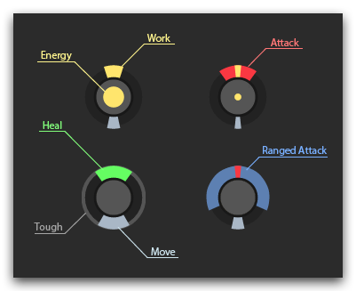

You build (spawn) units called creeps the same way as in other strategy games, but with one exception: you construct the "body" of a new creep out of 7 available body part types, the resulting body being a sequence up to 50 parts. It allows thousands of creep types and their roles: ordinary workers, huge construction machines able to build or repair a structure within a few cycles, weaselly couriers, heavy capacious trucks, fast and cheap scouts, well-equipped fighters with regeneration ability, etc. It may even be creeps resembling towers or fortresses for mining, defending, or seizing, with very little speed (couple of tiles per minute), but monstrous characteristics. Everything is up to you, your tactics and imagination.

However, remember that any creep has a life cycle of 1500 game ticks (approx. 30-60 minutes depending on the tick duration). Then it "ages" and dies. So you not only need to control existing creeps but set up manufacturing and automatic control of superseding generations of your creeps as well.
A standard spawn (structure) can only spawn regular creeps with the total cost of up to 300 energy units. Spawning more expensive creeps requires a spawn extension in the room. Each extension can contain up to 50 extra energy units that may be spent on creation of a creep. The exact location of extensions within a room does not matter, but they should be in the same room with the spawn (one extension can be used by several spawns). All the necessary energy should be in the spawn and extensions in the beginning of the creep creation.
The amount of extensions available for construction depends on the Room Controller in the room. Read more in Global control.
Creeps Skills
Possible part types of a creep body:
WORK– ability to harvest energy, construct and repair structures, upgrade controllers.MOVE– ability to move.CARRY– ability to transfer energy.ATTACK– ability of short-range attack.RANGED_ATTACK– ability of ranged attack.HEAL– ability to heal others.CLAIM- ability to claim territory control.TOUGH– "empty" part with the sole purpose of defense.
The effectiveness of an ability depends on the amount of parts of a corresponding type. For example, a worker creep with 3 parts of the WORK type will work 3 times as effectively as a creep with only 1 WORKpart. The same applies to all the other types and actions.
Movement
Each body part has its own physical weight: the more parts a creep bears, the more difficult it is for it to move. Each body part (except MOVE) generates fatigue points when the creep moves: 1 point per body part on roads, 2 on plain land, 10 on swamp. Each MOVE body part decreases fatigue points by 2 per tick. The creep cannot move when its fatigue is greater than zero.
To maintain the maximum movement speed of 1 square per tick, a creep needs to have as many
MOVEparts as all the other parts of its body combined.
In other words, one MOVE part can move one other part one square per tick. If a creep has less MOVE parts, its movement will be proportionally slowed which is seen by the increasing fatigue.
It's worth noting that empty CARRY parts don't generate fatigue.
Samples:
- Creep
[CARRY, WORK, MOVE]will move 1 square per tick if it does not bear energy, and 1 square per 2 ticks if loaded. - Creep
[TOUGH, ATTACK, ATTACK, MOVE, MOVE, MOVE]will move at maximum speed of 1 square per tick. - Creep
[TOUGH, ATTACK, ATTACK, MOVE, MOVE]will move 1 square per 2 ticks because of rounding up.
Damage
The total amount of hits a creep has depends of the amount of its body parts – 100 hits per each part. The order in which the parts were specified during the spawning of a creep also has a bearing. Under attack, the first parts to take hits are those specified first. Full damage to a part leads to complete disabling of it – the creep can no longer perform this function.